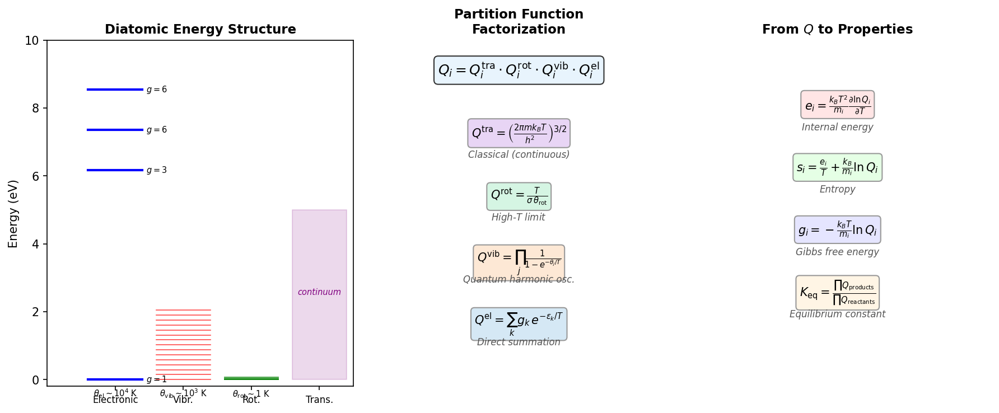

1. Thermodynamic Properties
This chapter describes how PLATO computes per-species and mixture
thermodynamic properties from statistical mechanics (the default path) and
from NASA 9-coefficient polynomials (the optional path). The implementation
resides in src/thermo/ (~28 source files).
The presentation follows [Munafo_thesis] (Chapter 1) for the partition function framework, [Magin_thesis] (Chapter 2) for entropy and Gibbs free energy, and [MunafoPanesi2025] for the overall formulation.
1.1. Statistical Mechanics Foundation
The central idea of statistical thermodynamics is that macroscopic properties emerge from the partition function \(Q\), which counts the number of accessible microstates weighted by their Boltzmann probability. Once \(Q\) is known, all thermodynamic quantities follow by differentiation.
For an ideal gas, the energy modes are assumed to be separable: translational motion is classical (continuous), while internal modes (rotation, vibration, electronic excitation) are quantized. This allows the total partition function to factorize, and each factor can be evaluated at the temperature governing that mode.
{kind=link}

Figure 1.1 Left: Energy level structure of a diatomic molecule showing the separation of scales between electronic (\(\sim 10^4\) K), vibrational (\(\sim 10^3\) K), rotational (\(\sim 1\) K), and translational (continuous) modes. Center: The corresponding partition function factorization. Right: How all thermodynamic properties derive from \(Q\) by differentiation.
1.2. Partition Functions
The internal partition function of species i factorizes under the assumption of separable energy modes [Munafo_thesis] (Eq. 1.35):
The translational partition function \(Q_i^{\mathrm{tra}}\) is treated separately because it depends on the thermodynamic state (pressure or density), while the internal partition function depends only on temperature.
Note
PLATO uses the symbol \(Q\) for partition functions (variable name
Q in the source code). The Munafò thesis [Munafo_thesis] uses
\(Z\), but the notation is otherwise identical.
1.2.1. Translational Partition Function
For a 3D ideal gas of species i at temperature T and pressure p [Munafo_thesis] (Eq. 1.35):
This is the partition function per unit volume. The factor \(k_{\mathrm{B}} T / p\) converts to a per-particle partition function at pressure p when needed (e.g., in the Sackur–Tetrode equation and the equilibrium constant).
The translational partition function carries the mass dependence: heavier species have more translational states available at a given temperature (larger \(Q^{\mathrm{tra}}\)), because heavier particles have smaller de Broglie wavelengths \(\Lambda_i = h / \sqrt{2 \pi m_i k_{\mathrm{B}} T}\).
Free electrons are treated identically but evaluated at \(T_e\) rather than \(T_h\), with mass \(m_e\).
1.2.2. Rotational Partition Function (Rigid Rotor)
For a linear molecule (atomicity > 1, single moment of inertia I), in the high-temperature limit where \(T \gg \theta_{\mathrm{rot}}\) [Munafo_thesis] (Eq. 3.53):
where:
\(\theta_{\mathrm{rot},i} = h^2 / (8 \pi^2 I_i k_{\mathrm{B}})\) is the characteristic rotational temperature (typically ~2 K for diatomics, so the high-T limit is always valid in hypersonic flows)
\(\sigma_i\) is the symmetry number (2 for homonuclear molecules like N2, O2; 1 for heteronuclear molecules like NO)
For a nonlinear molecule with three principal moments of inertia:
Atoms (atomicity = 1) have no rotational degrees of freedom: \(Q^{\mathrm{rot}} = 1\).
Source: src/thermo/thermo_utils.F90, lines 55–76.
1.2.3. Vibrational Partition Function (Harmonic Oscillator)
For a molecule with \(n_{\mathrm{vib}}\) vibrational modes, each modeled as an independent quantum harmonic oscillator:
where \(\theta_{\mathrm{vib},j}\) is the characteristic vibrational temperature of mode j (e.g., \(\theta_{\mathrm{vib}} = 3393\) K for N2, \(\theta_{\mathrm{vib}} = 2273\) K for O2).
The energy zero is at the ground vibrational state (\(v = 0\)). The vibrational partition function approaches 1 as \(T \to 0\) (only the ground state is populated) and grows linearly as \(T / \theta_{\mathrm{vib}}\) at high temperatures (classical limit).
Source: src/thermo/thermo_utils.F90, lines 118–129.
1.2.4. Electronic Partition Function (Boltzmann)
The electronic partition function is a direct sum over discrete energy levels:
where \(g_k\) is the degeneracy and \(\varepsilon_k\) is the energy
of the k-th electronic level, expressed in Kelvin
(\(\varepsilon_k = E_k / k_{\mathrm{B}}\)). Level data (energies and
degeneracies) are read from the species files in database/thermo/.
At low temperatures, only the ground state contributes: \(Q^{\mathrm{el}} \approx g_1\). At high temperatures, excited states become populated and \(Q^{\mathrm{el}}\) increases.
Warning
The electronic partition function formally diverges for atoms because the number of bound states is infinite. In practice, PLATO truncates the sum at a finite number of levels from the database. When Debye–Hückel corrections are active (see Debye–Hückel Corrections), the truncation is determined by Griem’s criterion based on the local plasma conditions.
For state-to-state (StS) pseudo-species, each level is treated as an independent species with \(Q^{\mathrm{el}} = g_k\) (just the degeneracy) and zero internal energy above its own reference.
Source: src/thermo/thermo_utils.F90, lines 155–175.
1.3. Model Dispatch Mechanism
PLATO uses a MODEL parameter (set per species in the database files) to
select which partition function and thermodynamic routines are called at
runtime. This is implemented via procedure pointer arrays assigned during
initialization in src/thermo/thermo_initialize.F90 (lines 1320–1427):
MODEL |
Description |
Target |
|---|---|---|
|
Rigid rotor + harmonic oscillator + electronic (default) |
Molecules |
|
Electronic Boltzmann only |
Atoms |
|
Rigid rotor only |
Special |
|
Harmonic oscillator only |
Special |
|
Rigid rotor + harmonic oscillator (no electronic) |
Molecules |
|
State-to-state (\(Q = g\), \(e^{\mathrm{int}} = 0\)) |
Any |
|
Coarse-grained (table interpolation) |
Molecules |
For example, the pointer assignment for the RR_HO_EL model assigns:
Partition function:
rr_ho_el_QEnergy:
rr_ho_el_eEntropy:
rr_ho_el_sGibbs:
rr_ho_el_g
This polymorphic dispatch avoids runtime branching in inner loops: the function pointer is resolved once at initialization, and all subsequent calls go directly to the correct implementation.
1.4. From Partition Functions to Thermodynamic Properties
This section shows how all thermodynamic properties are derived from the partition function. This is the fundamental connection between microscopic (quantum) and macroscopic (continuum) descriptions.
The key relation is [Munafo_thesis] (Eqs. 1.42–1.43):
This formula states that the specific energy of any mode equals \(k_{\mathrm{B}} T^2 / m_i\) times the logarithmic temperature derivative of the corresponding partition function. It is the bridge between statistical mechanics and thermodynamics.
Derivation sketch. Consider a canonical ensemble of \(N_i\) particles of species i in volume V. The Helmholtz free energy is \(F = -N_i k_{\mathrm{B}} T \ln Q_i\). The internal energy is \(U = -\partial \ln Q_i / \partial (1/(k_{\mathrm{B}} T)) = k_{\mathrm{B}} T^2 \, \partial \ln Q_i / \partial T\). Dividing by mass \(N_i m_i\) gives the specific energy (1.7).
Similarly, the specific heat follows by differentiation:
The entropy per unit mass of a mode is:
And the Gibbs free energy per unit mass:
(plus the \(pV = R_i T\) term for translation).
Note
In the source code (src/thermo/thermo_utils.F90), the electronic
energy is computed directly from the Boltzmann-weighted sum
\(e = \sum_k \varepsilon_k g_k \exp(-\varepsilon_k/T) / Q\)
rather than via the logarithmic derivative (1.7). Both
approaches are mathematically equivalent; the direct sum is numerically
more convenient when the level energies are tabulated.
1.5. Internal Energy
Applying (1.7) to each partition function, the total specific internal energy of species i decomposes as [Munafo_thesis] (Eqs. 1.42–1.44):
where \(e_{f,i}\) is the formation energy at 0 K (see Formation Enthalpies and Reference States).
1.5.1. Translational Energy
From \(\ln Q^{\mathrm{tra}} = \tfrac{3}{2} \ln T + \mathrm{const}\), we get \(\partial \ln Q^{\mathrm{tra}} / \partial T = 3/(2T)\), so:
This is the classical equipartition result: \(\tfrac{1}{2} k_{\mathrm{B}} T\) per translational degree of freedom, three degrees per particle.
For free electrons:
1.5.2. Rotational Energy
From \(\ln Q^{\mathrm{rot}} = \ln T - \ln(\sigma \theta_{\mathrm{rot}})\) for a linear molecule, \(\partial \ln Q^{\mathrm{rot}} / \partial T = 1/T\):
For a nonlinear molecule (\(\ln Q^{\mathrm{rot}} \propto \tfrac{3}{2} \ln T\)):
In the standard two-temperature model, \(T_r = T_h\) (rotation equilibrates with translation on fast timescales).
1.5.3. Vibrational Energy
From the harmonic oscillator partition function (1.5):
This is the Planck distribution for each vibrational mode. At low temperature (\(T_v \ll \theta_{\mathrm{vib}}\)), the mode is “frozen” with exponentially small energy. At high temperature (\(T_v \gg \theta_{\mathrm{vib}}\)), the energy approaches the classical limit \(R_i T_v\) per mode.
1.5.4. Electronic Energy
The mean electronic energy from the Boltzmann distribution:
This is a thermal average: each level’s energy is weighted by its Boltzmann population. At low temperatures, only the ground state is populated and \(e^{\mathrm{el}} \approx 0\). The electronic energy becomes significant when \(T_e\) is comparable to the first excited state energy (typically thousands of Kelvin).
Source: src/thermo/thermo_prop_energy.F90,
src/thermo/thermo_utils.F90.
1.5.5. Energy Densities
The conserved energy densities used in the governing equations are:
where the sum in (1.18) runs over heavy particles only and \(e_i^{\mathrm{int}} = e_i^{\mathrm{rot}} + e_i^{\mathrm{vib}} + e_i^{\mathrm{el}}\).
1.6. Enthalpy
The specific enthalpy of species i includes the \(pV\) work term. For an ideal gas, \(pV = n k_{\mathrm{B}} T\) per particle, so per unit mass [Munafo_thesis] (text after Eq. 1.44):
Explicitly, for heavy particles:
The \(5/2\) comes from \(3/2\) (translational \(c_v\)) plus \(1\) (the \(pV\) term). This is also called the translational enthalpy: \(h_i^{\mathrm{tra}} = \tfrac{5}{2} R_i T\) [Magin_thesis] (Eq. 2.4).
For free electrons:
Source: src/thermo/thermo_prop_enthalpy.F90.
1.7. Specific Heats
The specific heat at constant volume is the temperature derivative of the energy [Munafo_thesis] (Eq. 1.45):
and the specific heat at constant pressure (for an ideal gas):
Note that the internal modes contribute equally to \(c_v\) and \(c_p\) because they involve no \(pV\) work: \(c_{p,i}^{\mathrm{int}} = c_{v,i}^{\mathrm{int}}\) [Munafo_thesis] (Eq. 1.47).
1.7.1. Specific Heat at Constant Volume
Translational (equipartition, exact):
Rotational (rigid-rotor, fully excited):
Vibrational (harmonic oscillator):
This is the Einstein function: it vanishes exponentially as \(T \to 0\) and approaches \(R_i\) per mode as \(T \to \infty\).
Electronic (Boltzmann, variance of the energy distribution):
This is \(\langle \varepsilon^2 \rangle - \langle \varepsilon \rangle^2\) divided by \(T^2\): the electronic specific heat is proportional to the variance of the electronic energy distribution. It peaks when \(T \sim \varepsilon_1\) (the first excitation energy) and vanishes both at low T (one state occupied) and high T (all states equally populated).
1.7.2. Specific Heat at Constant Pressure
Source: src/thermo/thermo_prop_cv.F90, src/thermo/thermo_prop_cp.F90.
1.8. Entropy
The entropy is derived from the partition function via (1.9). The specific entropy decomposes into modal contributions [Magin_thesis] (Eqs. 2.4–2.7):
1.8.1. Translational Entropy (Sackur–Tetrode)
The translational entropy includes the pressure dependence because the translational partition function depends on the available volume per particle. From (1.9) applied to (1.2) [Magin_thesis] (Eq. 2.4c):
This is the classical Sackur–Tetrode equation expressed per unit mass. As expected from the third law of thermodynamics, \(s^{\mathrm{tra}} \to -\infty\) as \(T \to 0\) (the quantum regime where the classical partition function breaks down).
1.8.2. Rotational Entropy
For a linear molecule, from (1.9) applied to (1.3):
For a nonlinear molecule:
Source: src/thermo/thermo_function.F90, line 1614.
1.8.3. Vibrational Entropy
From (1.9) applied to (1.5) [Magin_thesis] (Eq. 2.7b):
The first term is \(e^{\mathrm{vib}} / (R_i T)\) and the second is \(\ln Q^{\mathrm{vib}}\).
1.8.4. Electronic Entropy
This is (1.9) with the electronic partition function: \(s = e/T + (k_{\mathrm{B}}/m_i) \ln Q\) [Magin_thesis] (Eq. 2.5b).
Source: src/thermo/thermo_function.F90, line 1699.
1.8.5. Entropy of Mixing
The mixture specific entropy includes an ideal-gas mixing term [Magin_thesis] (p. 35):
The \(-R_i \ln X_i\) term is always positive (since \(X_i < 1\)), reflecting the entropy increase upon mixing.
Source: src/thermo/thermo_prop_entropy.F90.
1.9. Gibbs Free Energy
The specific Gibbs free energy is the key quantity for chemical equilibrium [Magin_thesis] (p. 35):
From (1.10), each modal contribution is \(g^{\mathrm{mode}} = -R_i T \ln Q^{\mathrm{mode}}\) (with the translational term including the \(pV\) contribution).
Translational:
Rotational (linear molecule):
Vibrational:
Electronic:
The Gibbs free energy is central to chemical equilibrium because a reaction proceeds spontaneously in the direction that decreases the total Gibbs energy. At equilibrium, \(\sum_i \nu_i g_i = 0\) (the law of mass action; see Equilibrium Composition).
Source: src/thermo/thermo_prop_gibbs.F90.
1.10. Helmholtz Free Energy
The specific Helmholtz free energy is:
For free electrons: \(f_e = g_e - (k_{\mathrm{B}}/m_e) T_e\).
Source: src/thermo/thermo_prop_gibbs.F90, lines 126–147.
1.11. Equilibrium Constant from Partition Functions
The equilibrium constant connects microscopic (partition function) and macroscopic (reaction rate) descriptions. Its derivation from partition functions is one of the central results in PLATO.
Consider a generic dissociation reaction:
Microscopic microreversibility [Munafo_thesis] (Eq. 2.80) relates the state-specific forward and backward rate coefficients through the principle of detailed balance. At equilibrium, the forward and backward rates must be equal for every microscopic channel:
where \(g_i\) is the degeneracy of level i, \(E_i\) its energy, and \(E_{\mathrm{A}}, E_{\mathrm{B}}\) are the atomic formation energies.
Macroscopic equilibrium constant. Summing over all internal levels with Boltzmann weights [Munafo_thesis] (Eq. 3.48):
This is the fundamental result: the equilibrium constant is a ratio of partition functions, multiplied by a Boltzmann factor that accounts for the energy difference between products and reactants.
For a general reaction \(\sum_i \nu_i A_i = 0\) (with \(\nu_i > 0\) for products, \(\nu_i < 0\) for reactants), the implementation computes [Munafo_thesis] (generalization of Eq. 3.48):
where \(\Delta\nu = \sum_c \nu_c\) accounts for the change in number of moles.
Alternative: Gibbs free energy path. When NASA polynomials are enabled, the equilibrium constant is computed from the Gibbs free energy [Magin_thesis] (Eq. 2.3):
Both paths ((1.37) and (1.38)) yield the same equilibrium constant to the extent that the underlying thermodynamic data are consistent.
Source: src/thermo/thermo_equilibrium_comp.F90, lines 504–541;
src/thermo/thermo_prop_part_function.F90.
1.12. NASA 9-Coefficient Polynomials
When the NASA polynomial path is enabled (-DPLATO_ENABLE_NASA_POLY=ON
or NASA_POLY_THERMO = T in the mixture file), thermodynamic properties
are computed from piecewise polynomial fits with 2–3 temperature intervals.
The reference state is \(T_{\mathrm{ref}} = 298.15\) K,
\(p_{\mathrm{ref}} = 10^5\) Pa (1 bar).
Specific heat (per mole):
Enthalpy (per mole):
Entropy (per mole, at \(p = p_{\mathrm{ref}}\)):
At arbitrary pressure:
Gibbs free energy (per mole):
Note
Per-mass quantities are obtained by dividing by the molar mass \(M_i\). The thermodynamic identity \(g = h - T s\) is satisfied to machine precision (~\(10^{-13}\)) for both the NASA and partition-function paths; see Example 7: Thermodynamic Potentials.
Source: src/thermo/nasa_thermo_prop_species_mole.F90.
1.13. Multi-Temperature Framework
PLATO supports up to \(n_T\) temperatures, each governing a different energy mode. The physical justification is that different energy modes relax on different timescales: translation equilibrates in a few collisions, rotation in tens of collisions, vibration in thousands to millions, and electronic excitation can be even slower.
Temperature |
Modes |
Species Types |
|---|---|---|
\(T_h\) |
Heavy-particle translation + rotation |
All heavy species |
\(T_e\) |
Free-electron translation + electronic excitation |
Electrons, atoms (electronic) |
\(T_v\) |
Vibration |
Molecules |
\(T_r\) |
Rotation (if separate from \(T_h\)) |
Molecules |
In the standard two-temperature (2T) model [Munafo_thesis] (Sec. 3.2):
\(T_h\) governs translation + rotation of all heavy particles.
\(T_v = T_e\) governs vibration + electronic excitation + electron translation.
In the single-temperature (LTE) limit: \(T_h = T_v = T_e = T\).
The TRANSFER database file specifies the number of temperatures and which
modes couple to which temperature.
1.13.1. Species Type Treatment
Free electrons (atomicity = 0): \(c_v = \tfrac{3}{2} k_{\mathrm{B}}/m_e\), all properties evaluated at \(T_e\).
Atoms (atomicity = 1): No rotational or vibrational modes. Translational at \(T_h\), electronic at \(T_e\).
Molecules (atomicity > 1): All four mode types. Translational + rotational at \(T_h\), vibrational at \(T_v\), electronic at \(T_e\).
1.13.2. Formation Enthalpies and Reference States
Species formation energies \(e_{f,i}\) are defined at 0 K relative to the elemental ground states. They enter:
The internal energy (1.11) as an additive constant
The partition function as a Boltzmann factor: \(Q_{\mathrm{form}} = \exp(-e_{f,i} m_i / (k_{\mathrm{B}} T))\)
The equilibrium constant (1.37) through the energy difference between products and reactants
For the N2–N system [Munafo_thesis] (Chapter 3), the dissociation energy is \(D_0 = 2 E_{\mathrm{N}} - E_{\mathrm{N_2}(v=0,J=0)} = 9.75\) eV, where \(E_{\mathrm{N}}\) is the atomic nitrogen formation energy.
The NASA polynomial path uses a reference state of \(T = 298.15\) K, \(p = 1\) bar. PLATO converts between the two reference conventions internally.
References
A. Munafò and M. Panesi, “PLATO: a Library for the Thermodynamics, Transport, and Kinetics of Multicomponent Gases and Plasmas,” J. Thermophysics and Heat Transfer, Vol. 39, No. 4, 2025.
A. Munafò, “Multi-Scale Models and Computational Methods for Aerothermodynamics,” PhD Thesis, Ecole Centrale Paris and von Karman Institute for Fluid Dynamics, 2014.
T.E. Magin, “A Model for Inductive Plasma Wind Tunnels,” PhD Thesis, Université Libre de Bruxelles and von Karman Institute for Fluid Dynamics, 2004.
S. Chapman and T.G. Cowling, The Mathematical Theory of Non-Uniform Gases, 3rd ed., Cambridge University Press, 1970.